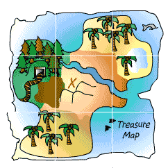

De: La Frikipedia, la enciclopedia extremadamente seria.
De: La Frikipedia, la enciclopedia extremadamente seria. De: La Frikipedia, la enciclopedia extremadamente seria.
| De la serie Países del planeta tierra: | |||||
| Kiribati | |||||
|---|---|---|---|---|---|
| |||||
| Lema: ¿Quieres un palo? (Te mao aou Te Tabamoa?) | |||||
| Himno: Oa oa oa, o![1]
| |||||
| 
| |||||
| Capital | Baikiri | ||||
| Mayor ciudad | Baikiri | ||||
| Lenguas oficiales | Kiribatiense, Sueco | ||||
| Gobierno | | ||||
| Su Señoria Presidencial | Anote Tong | ||||
| Área | Cercanias de Cangurolandia | ||||
| Población | 4 mal contaos | ||||
| Moneda | Leru Kiribatiense | ||||
| Zona horaria | |||||
| Dominio Internet | .ki ejemplo www.google.ki | ||||
| Código telefónico | ¿teléfono? ¿que es eso?
| ||||
| Lugar en peligro de extinción | |||||
«What the Fuck!!!»
~ Anote Tong, cuando se enteró de la inminente desaparición de su bonito país
País situado en Oceanía, formando principalmente por islotes de coral y que fue la única colonia sueca hasta 1790, año en el que se independizó. Desgraciadamente este país esta en grave riesgo de desaparecer debido al calentamiento global.
Allá por el lejano siglo equisvi (XVI) una expedición sueca de pescadores de pingüinos se desvió un poco de su rumbo encayando en una de las islas de Kiribati. Una vez alli decidieron colonizarla y anexionarla a Suecia pensando que tendria un gran valor comercial y estratégico, obviamente fallaron acertaron clarisimamente.
Durante aproximandamente un siglo, kiribati fue una colonia sueca y era utilizada por investigadores suecos para experimentar biologicamente sobre los nativos kiribatienses, provocando la aparición de especímenes tales como los chinegros.
Estos experimentos duraron solo la primera parte de la época colonizada, ya que el gobierno de suecia limitó los presupuestos para experimentación, por lo que kiribati paso a un tercer plano de la popularidad, lo que explica que tú,IP anónima, nunca oyeras hablar de el.
El glorioso 18 de Marzo de 1790 la tropas de Rogelio Sánchez (que inexplecablemente tenia un nombre latino) dirigió un ejército contra la sede de los caciques suecos, lo cual fue un acción totalmente innecesaria, ya que los suecos ya no tenían ningún interés en este estúpido precioso país.
Cuando las tropas de Rogelio Sánchez llegaron a la sede del gobierno, los suecos no pudieron parar de reirse debido al atuendo de los soldados, cabe destacar que uno de los múltiples fallos de traducción entre el Kiribatiense y el Sueco fue el cambio de la palabra payaso en sueco por la de militar en kiribatiense muy similares y de confusión frecuente.
Los suecos reconocidos mundialmente por su valentía cobardía huyeron despavoridos y muertos de risa del país, entre otras razones por que no lo querían para nada y solo les ocasionaba un montón de gastos.
Desde su independencia Kiribati cayó en el mayor de los desconocimientos, tal y como si hubiera un bujero negro para la información, no se conoce nada de Kiribati en los siguientes 200 años, incluso hay quien dice que wally se escondió aquí durante la II guerra mundial (posiblemente falacias)
Pero entonces llego el momento de la iluminación el 18 de marzo de 2008 apareció en internete, concretamente en youtubí donde un grupo de legendarios hombres criados en kiribati volvió a dar luz sobre kiribati, estos hombres eran el ente mamarracho tedioso[2] justo después de que dieran luz a la historia de esta gran patria, llegó la gran noticia...
Debido a el amado calentamiento global Kiribati esta destinado a una muerte segura, esto se debe a que según esta controvertida teoría el nivel del mar subirá, en Kiribati no existe nada parecido a un monte por lo que se inundará por completo.
Anote Tong lider actual de Kiribati pidió auxilio a las principales potencias asiáticas y de Oceanía para albergar a los habitantes de las islas,ningún país, salvo Nueva Zelanda que lo hizo y negativamente, emitió respuesta. Por lo que el futuro de Kiribati esta muy negro.
Formada por vaya usted a saber cuantas islas de coral, kiribati esta situada mas o menos por arriba de Cangurolandia, por lo que ¡sorpresa! esta en Oceanía.
Kiribati no es una isla volcánica por lo que no existe nada que se asemeje a la que conocemos por montaña, por lo que cuando los suecos les intentaron inculcar enseñar el cristianismo, no supieron traducir la palabra monte, (monte sinai...)
Kiribati no tiene ningún otro tipo de relación por que es despreciado por el resto de países del mundo.
La esperanza de vida tan corta de los varones se debe a exagerada tendencia a realizar duelos a muerte, por motivos absurdos, desde una corta edad. Hay quien afirma que Matt Groening para el guión del capitulo en el que Homer desafía a un sureño a un duelo, fue inspirado por esta tradición Kiribatiense.
Autor(es):